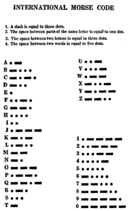

La clave morse es un código basado en puntos y rayas
El código morse, también conocido como alfabeto morse o clave morse, es un sistema de representación de letras y números mediante señales emitidas de forma intermitente.
En 1837, Samuel Morse y Alfred Vail estaban trabajando en un sistema de telégrafo eléctrico. Decidieron usar un método por el cual cada símbolo era transmitido de forma individual como una combinación de rayas y puntos, es decir, señales telegráficas que se diferencian en el tiempo de duración de la señal activa. Morse desarrolló una primera versión de su código en 1837 para enviar números, que luego se debían convertir en mensajes completos usando un libro de claves. Este código fue expandido por Vail en 1841 para incluir letras y otros signos de puntuación, creando así el código actual. Morse reconoció la idoneidad de este sistema y lo patentó junto con el telégrafo eléctrico. Fue conocido como American Morse Code y utilizado en la primera transmisión por telégrafo.
La duración del punto es la mínima posible. Una raya tiene una duración de aproximadamente tres veces la del punto. Entre cada par de símbolos de una misma letra existe una ausencia de señal con duración aproximada a la de un punto. Entre las letras de una misma palabra, la ausencia es de aproximadamente tres puntos. Para la separación de palabras transmitidas el tiempo es de aproximadamente tres veces el de la raya. Toda correspondencia entre dos estaciones deberá comenzar con la señal de llamada. Para llamar, la estación que llama transmitirá el distintivo de llamada (no más de dos veces) de la estación requerida, la palabra DE seguida por su propia señal de llamada y la señal -. - a menos que haya reglas especiales peculiares al tipo de aparato utilizado.

En sus comienzos, el alfabeto Morse se empleó en las líneas telegráficas mediante los tendidos de cable que se fueron instalando. Más tarde, se utilizó también en las transmisiones por radio, sobre todo en el mar y en el aire, hasta que surgieron las emisoras y los receptores de radiodifusión mediante voz. En la actualidad, el alfabeto Morse tiene aplicación casi exclusiva en el ámbito de los radioaficionados y escultistas, y aunque fue exigido frecuentemente su conocimiento para la obtención de la licencia de radioperador aficionado hasta el año 2005, posteriormente, los organismos que conceden esa licencia en todos los países están invitados a dispensar del examen de telegrafía a los candidatos.23 También se utiliza en la aviación instrumental para sintonizar las estaciones VOR, ILS y NDB. En las cartas de navegación está indicada la frecuencia junto con una señal Morse que sirve, mediante radio, para confirmar que ha sido sintonizada correctamente.4